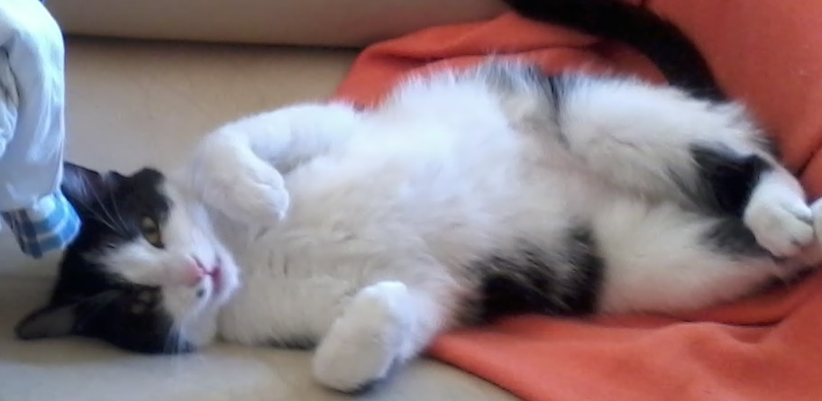

Bevezetés
Érdeklődési köröm sosem korlátozódott egy bizonyos témára, vagy területre. Figyelmemet egyformán felkelti egy megoldatlan természettudományi probléma, és a természet esztétikai gyönyörűsége maga is, így szabadidős elfoglaltságaim között is ugyanúgy szerepelnek kreativitást, mint racionalitást igénylő tevékenységek. E tulajdonságom tudatában jelentkeztem a Budapesti Műszaki Egyetem ipari termék- és formatervező mérnöki szakára, mivel úgy éreztem, itt lesz esélyem kibontakoztatni a bennem rejlő lehetőségeket.
Hobbijaim között szerepel a rajzolás és festés, de a technológia rohamos fejlősése következtében belekóstoltam a digitális művészetekbe is. Az eddigi munkáim megtekinthetőek a "Munkáim" fül alatt.
Kedvenc természettudományom a biológia, így szabadidőmben szívesen olvasok hozzá kapcsolódó könyveket és tudományos cikkeket. Egyik nagy vágyam, hogy létrehozhassak valamit, ami összekapcsolja ezt a tudományt a művészettel.
Ha többet szeretnél megtudni rólam, kattints ide .
Close
Munkáim
Rajzolok színesben és fekete-fehérben is. Kész vagyok az újításokra, így a papír-alapú alkotások mellett digitális rajzok és animációk is kerültek már ki a kezeim közül.
Az alábbi rajzon jól látszódik a munkafolyamat.
Végül logókat is szívesen készítek:
Close
Rólam

Szívemnek legkedvesebbje Folti, a cicám, kinek képével indítom ezt a fület. Úgy érzem, a macskák is úgymond műalkotások, akiket csak csodálni lehet; ugyanakkor tanulmányozni is fantasztikus, hiszen sokkal többet rejtenek, mint elsőre gondolnánk. Különleges testfelépítésük, érzékeny érzékszerveik, és magas érzelmi intelligenciájuk mellett ugyanúgy taníthatóak, mint a kutyák, ezt személyesen tapasztalom.
A biológia különösebben a kilencedik osztálytól foglalkoztatott, egy év múlva úgy döntöttem, felveszem a biológia fakultációt, majd 12.-ben emelt érettségit tettem belőle. A művészetek viszont már egészen kiskoromban megfogtak. Versenyeket nyertem, és folytattam az alkotást, de soha nem jártam művészeti iskolába.
Szívesen foglalkozom a különböző kultúrákkal, nyelvekkel is. A gimnáziumban letett angol és német nyelvvizsgám után elkezdtem érdeklődni a keleti kultúrák iránt, így jelenleg japánul tanulok.
Close
Kapcsolat
e-mail:lucernaszirom@gmail.com
Bezár